23:36
承接了一个罗德岱堡出发的海外邮轮团，客户选择了世界最大船之一的皇家加勒比海洋和悦号，走的是东加勒比和西加勒比，而且客户都是搞摄影的，他们在船上记录了日落的过程。
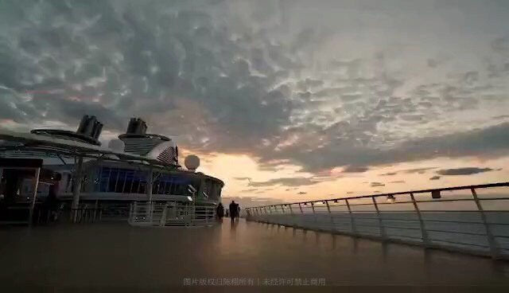
延时摄影是以一种将时间压缩的拍摄技术，是将一组照片或视频把几分钟、几小时甚至是几天几年的过程压缩在一个较短的时间内以视频方式播放。 拍延时不能着急，不仅是技术上的要求，更是磨练心性的过程，同时延时最后呈现出来的不仅仅是事物本身的样子，还是时间变化带来的表象的不断排列组合，正所谓缘起性空……
承接了一个罗德岱堡出发的海外邮轮团，客户选择了世界最大船之一的皇家加勒比海洋和悦号，走的是东加勒比和西加勒比，而且客户都是搞摄影的，他们在船上记录了日落的过程。
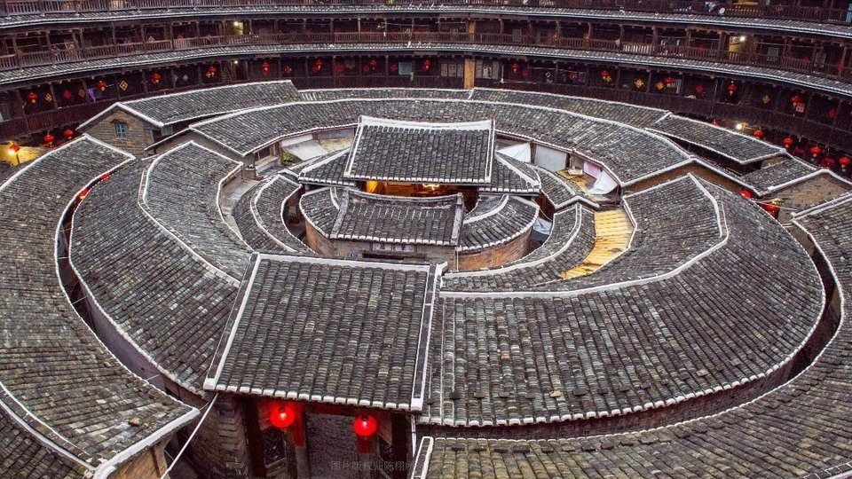
永定土楼是世界文化遗产，能上楼拍摄是个难得的机会，但是我错误判断了光的变化，整个过程拍了40分钟，肉眼能看到的动感非常有限，是个失败的拍摄。
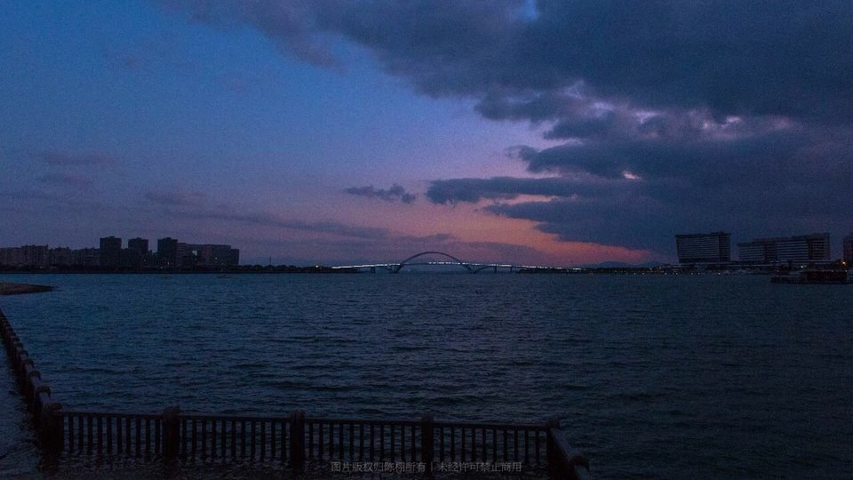
厦门五缘湾，是厦门人晨练的地方，用单反和GoPro都进行了拍摄，无疑单反的细腻变化是值得称赞的，只是后期制作很费劲，但是日后重要的拍摄一定要用单反。
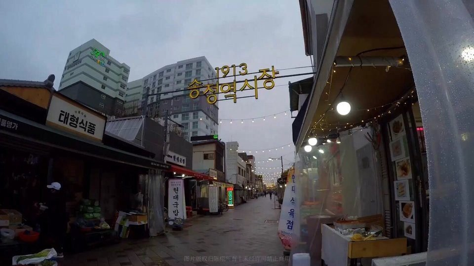
光州1913松亭站市场，已有百余年历史，依旧活力十足……

MSC地中海邮轮辉煌号进入福冈海域日出后的50分钟。
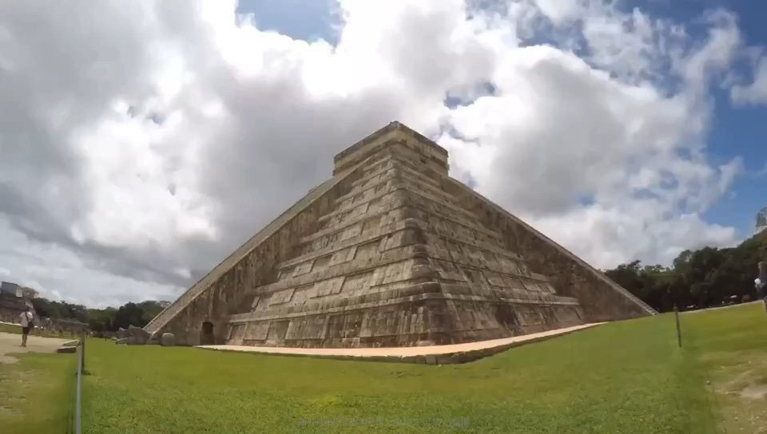
靠近天堂
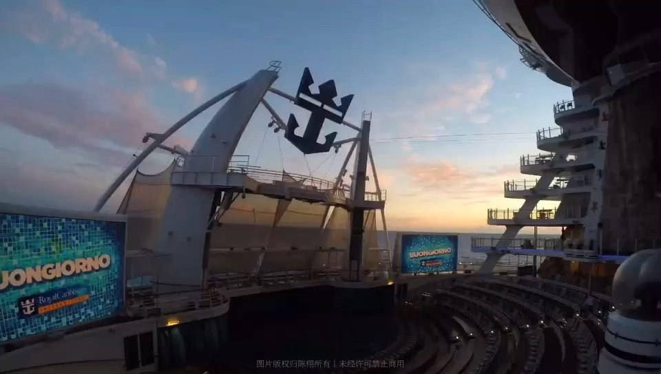
皇家加勒比海洋魅丽号抵达洪都拉斯罗阿坦岛，邮轮、云、光都在动，心不动的感觉很好……皇家加勒比应该给我广告费[微笑]
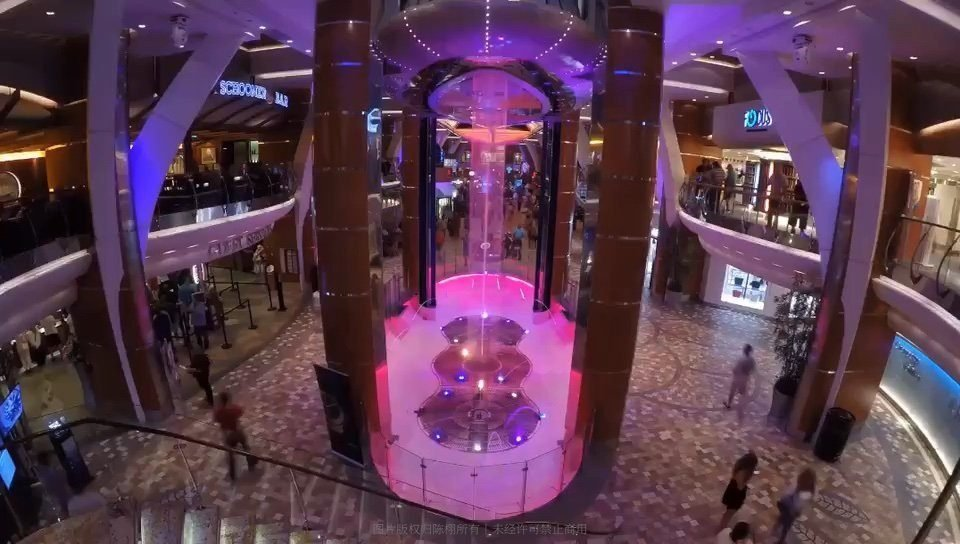
皇家大道上下左右前后一直川流不息……生命在于流动
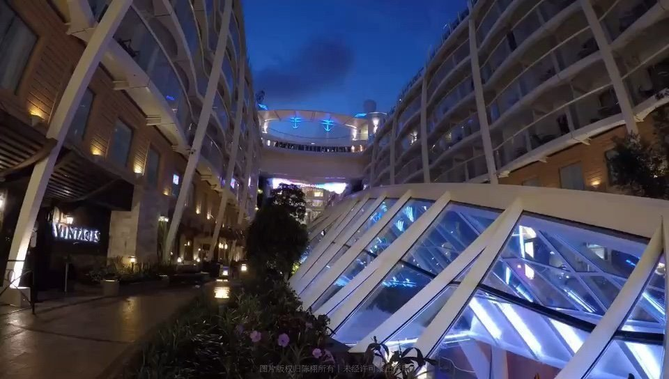
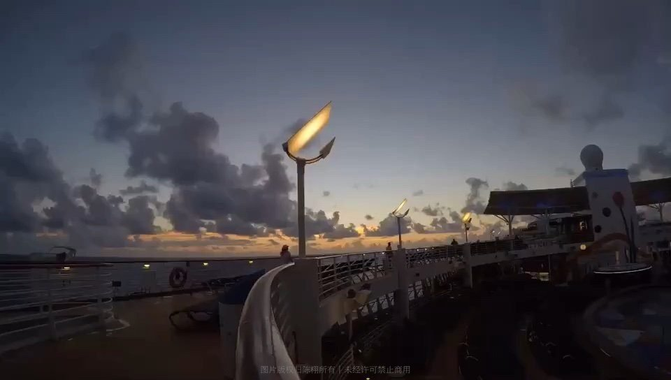
从日出到日落就是一天
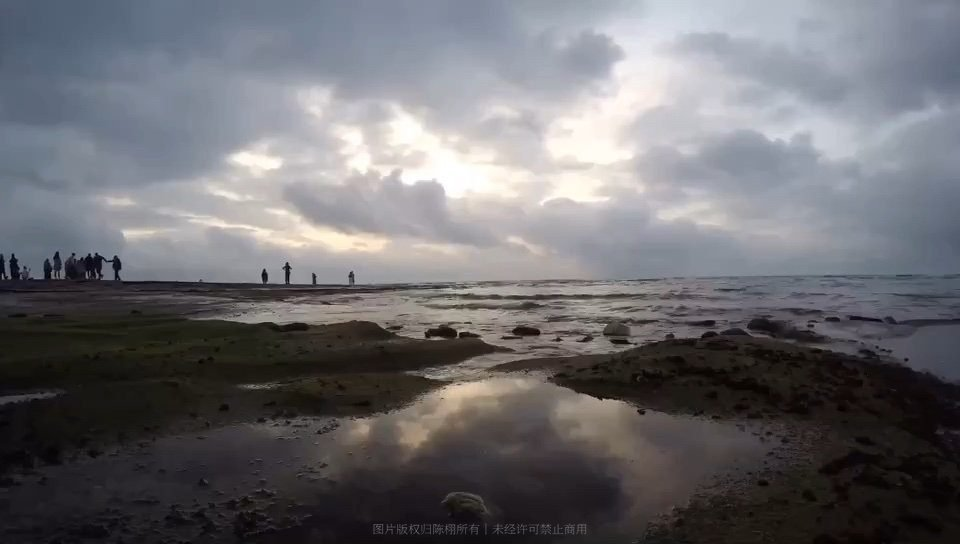
刚刚过去的50分钟，吹吹风听听海，看云卷云舒，想点事……

这次拍点塞班high的，无人机延时2秒间隔5秒用时4分11秒……

地水火风共成身，随彼因缘招异果，“四大”各有各的行动逻辑，各有各的因果轨迹，在很大程度上都不依主观意志为转移。
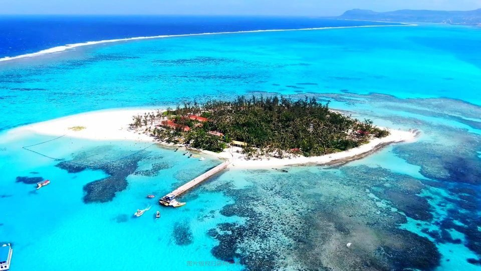
军舰岛延时航拍间隔4秒用时16分41秒
塞班星空，除了设备运气还要有胆量勇气

遇到强气流有些颠簸，请系好安全带……
这一年尝试了单反、GoPro、大疆无人机的延时摄影，各有利弊，各有心得，过程是愉悦的……惊奇是不断不断被发现的，虽然诸相非相，但毕竟少即是多，不常见的就是可贵的。
留言